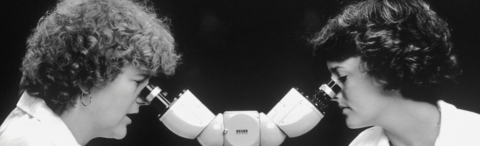

Creative Link for Advancing Digital Health brings together investigators from the arts, humanities, and other creative disciplines with biomedical researchers and providers to identify gaps in healthcare and develop innovative digital solutions. The project promotes and facilitates the formation of multidisciplinary teams that can compete nationally for high-profile funding opportunities in the STEM+H fields and participate in robust commercialization efforts, resulting in transformational impacts on national, as well as Kentucky-specific, healthcare outcomes.

Our members are healthcare researchers/clinicians and creative practitioners.
Creative practitioners can request to participate in specific ideation session. If they are working as a part of a project team within our Rapid Ideation and Prototyping Pipeline (RIPP) they can request student worker support from the general pool or recommend specific students to assist on set project tasks. For ongoing projects the student onboarding process and assist with the overall project tracking, reporting and management tasks. Creative practitioner members can request materials budget support for specific projects and have access to materials from the general pool.
Healthcare members interested in co-ideation sessions focused on Digital Health can request a meeting. If project is accepted into our Rapid Ideation and Prototyping Pipeline (RIPP) Creative Link will support their creative counterpart (student worker pool and materials budget) and will assist in the overall project tracking, reporting and management tasks. We will continue to evaluate each project during the key points in its lifecycle.